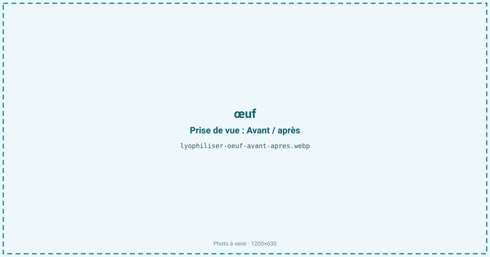
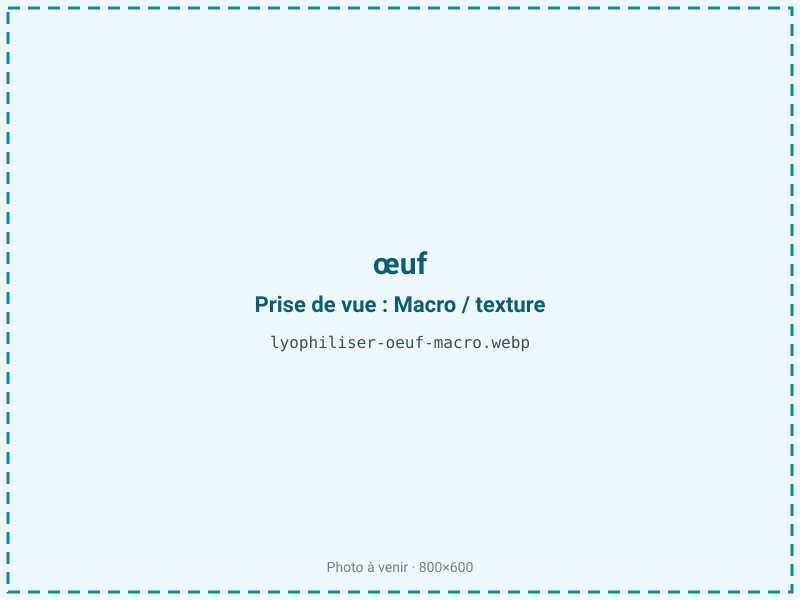
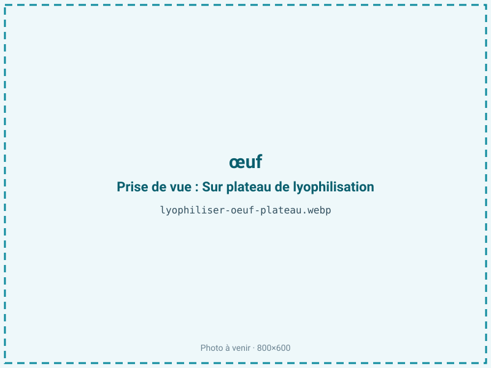
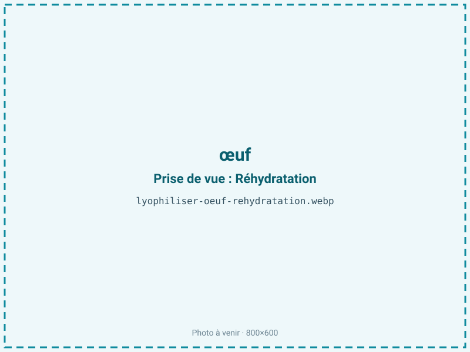

Lyophiliser des œufs
L'œuf frais est fragile, encombrant et porteur d'un risque sanitaire. Lyophilisé après pasteurisation, il devient une poudre légère, stable plus d'un an sans froid, qui se réhydrate en œuf battu. C'est une solution logistique pour la randonnée, la boulangerie industrielle et la nutrition protéinée.

En bref
Comment œuf se comporte à la lyophilisation
L'œuf entier titre environ 75 % d'eau, mais cette moyenne masque deux matières très différentes. Le blanc (albumen) est à près de 88 % d'eau et quasiment sans lipides : c'est une solution de protéines, dont l'ovalbumine, qui gélifient à la chaleur — d'où l'interdiction de tout séchage chaud si l'on veut une poudre réhydratable. Le jaune est à l'inverse riche en lipides (environ un tiers de sa matière sèche), en phospholipides (lécithine) et en cholestérol, ce qui le rend oxydable.
Un point propre à l'œuf : il contient un peu de glucose libre qui réagit avec les protéines pendant le stockage (réaction de Maillard), brunissant la poudre et dégradant sa solubilité. C'est le défaut historique de la poudre d'œuf, que l'industrie corrige souvent par un désucrage enzymatique (glucose oxydase) avant séchage. À la congélation puis à la sublimation, le mélange battu sèche en une matrice friable ; la lécithine, tensioactive, aide ensuite la poudre à se réhydrater et à réémulsionner.
Paramètres de cycle
Casser, battre et surtout pasteuriser l'œuf avant traitement : c'est une étape sanitaire non négociable (risque Salmonella). Un désucrage enzymatique peut être ajouté pour éviter le brunissement de Maillard au stockage. Couler le mélange en couche fine et régulière sur les plateaux, puis congeler à −30 °C.
En sublimation primaire, garder une clayette modérée pour ne pas coaguler les protéines du blanc, puis mener un palier secondaire long. L'aw cible est de 0,20 à 0,30 : ce niveau bas limite le brunissement de Maillard et préserve la solubilité. C'est un compromis : la fraction grasse du jaune préférerait rester au-dessus de 0,30, mais le contrôle du brunissement et la stabilité de la poudre l'emportent ici, à condition de compléter par une barrière contre l'oxygène. Le critère d'arrêt vise une poudre fluide, non collante, à l'aw ciblée.
Pièges connus
- Battre et pasteuriser avant traitement (sécurité sanitaire).
- Le jaune, gras, oxyde : barrière conseillée.



Variantes & provenance
On peut lyophiliser l'œuf entier, le blanc seul ou le jaune seul, trois produits aux comportements distincts : le blanc, maigre, se sèche bas sans souci d'oxydation ; le jaune, gras, demande une barrière et une aw contrôlée. Le calibre et la fraîcheur influent surtout sur la qualité fonctionnelle (pouvoir moussant du blanc, émulsifiant du jaune), qui se dégrade avec l'âge de l'œuf. L'origine (plein air, bio) est un argument commercial mais change peu le procédé. Selon l'usage, on ajuste : blanc lyophilisé pour la pâtisserie et les protéines, jaune pour les sauces et l'émulsion, œuf entier pour la reconstitution en omelette ou en brouillé.
Conservation & DLUO
Le facteur limitant de la poudre d'œuf est double : le brunissement non enzymatique (Maillard entre le glucose et les protéines), qui impose l'aw basse de 0,20 à 0,30, et l'oxydation des lipides du jaune. Ces deux exigences tirent en sens opposé. La fraction grasse du jaune, un produit modérément gras, serait la plus stable entre aw 0,30 et 0,50 — en dessous de 0,30, on retire la monocouche d'eau qui protège ses lipides et l'on favorise le rancissement.
Mais le contrôle du brunissement, plus déterminant pour la poudre d'œuf, impose de rester bas ; on compense en protégeant le jaune par une barrière et un inertage azote. Comptez 10 à 18 mois en barrière. Le désucrage préalable et un stockage au frais et à l'abri de la lumière prolongent nettement la tenue en freinant à la fois Maillard et oxydation.
10 à 18 mois en barrière.
Estimez selon votre emballage :
Face aux autres procédés de séchage
La poudre d'œuf existe surtout par atomisation (spray-drying) à chaud, procédé économique et dominant pour les gros volumes, mais qui pousse le brunissement de Maillard et peut altérer le pouvoir moussant du blanc. La lyophilisation donne une poudre plus proche de l'œuf frais, mieux solubilisée et à la fonctionnalité mieux préservée, au prix d'un coût supérieur — elle vise donc les usages premium ou techniques plutôt que la commodité. Le séchage à l'air chaud direct, lui, coagule et gélifie les protéines : inutilisable pour une poudre réhydratable. Le froid reste la voie de qualité quand la fonctionnalité du blanc ou la finesse du produit priment.
Marchés & applications
La poudre d'œuf lyophilisée sert la randonnée et les rations (omelette reconstituée, légère et sans froid), la boulangerie et la pâtisserie (dorure, appareils, meringues à partir de blanc), et la nutrition sportive via des protéines de blanc d'œuf. Les clients types sont les fabricants de plats déshydratés d'outdoor, les industriels de la boulangerie-viennoiserie, les marques de compléments protéinés et les cuisines collectives cherchant un ingrédient stable, standardisé et sûr sur le plan sanitaire.
- Poudre d'œuf de randonnée
- Boulangerie et pâtisserie
- Protéines
Questions fréquentes — œuf
La poudre d'œuf lyophilisée se réhydrate-t-elle en vrai œuf ?
Oui : mélangée à de l'eau, elle redonne un appareil qui se cuit en omelette ou en œufs brouillés. La lécithine du jaune aide à la reconstitution.
Faut-il pasteuriser avant de lyophiliser ?
Oui, impérativement : l'œuf cru peut porter des salmonelles, et la lyophilisation ne les détruit pas. La pasteurisation avant traitement est une étape sanitaire obligatoire.
Pourquoi la poudre d'œuf brunit-elle parfois au stockage ?
À cause de la réaction de Maillard entre le glucose de l'œuf et ses protéines. On l'évite par un désucrage enzymatique avant séchage et une aw maintenue basse.
Peut-on lyophiliser le blanc seul pour les protéines ?
Oui : le blanc, maigre et sans lipides, se sèche à basse aw sans risque d'oxydation, ce qui en fait une excellente base de poudre protéinée et de meringue.
Combien de temps se conserve-t-elle ?
10 à 18 mois en barrière, mieux au frais et à l'abri de la lumière. Le jaune étant gras, un inertage azote prolonge la conservation.
Quel est le ratio de l'œuf lyophilisé ?
Environ 4:1 : il faut à peu près 400 g d'œuf battu pour 100 g de poudre, l'œuf entier contenant autour de 75 % d'eau.
Le jaune lyophilisé s'oxyde-t-il ?
Oui, car il est riche en lipides et en lécithine : il faut une barrière et éviter de le sur-sécher en dessous d'aw 0,30, ce qui accélérerait le rancissement.
Prochaine étape : envoyez-nous 200 g
Vous avez les repères de l'œuf. La suite logique : nous envoyer un échantillon et repartir avec une fiche technique sur votre produit — rendement, aw finale, coût au kilo.
Tester l'œuf — 250 à 500 €Déductible de votre premier lot.